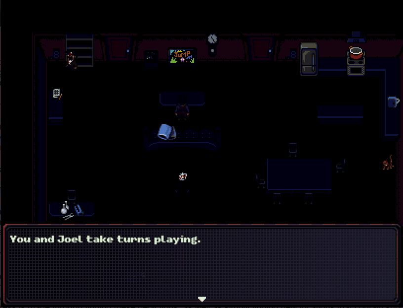
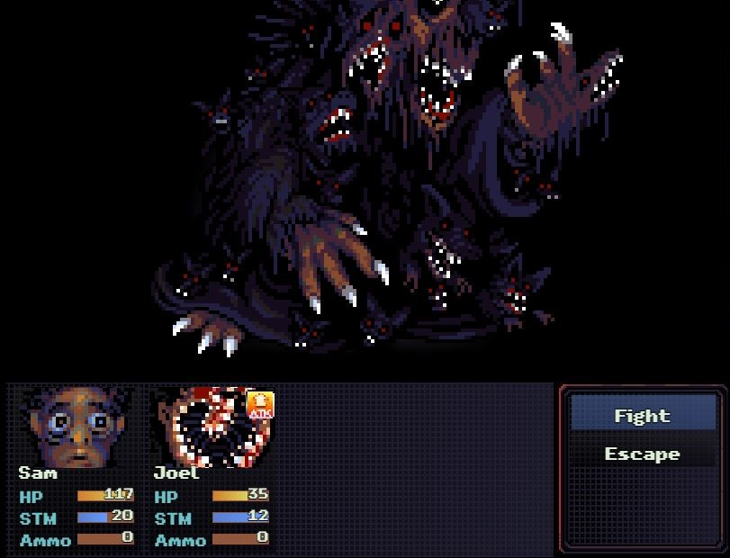
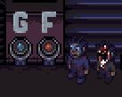
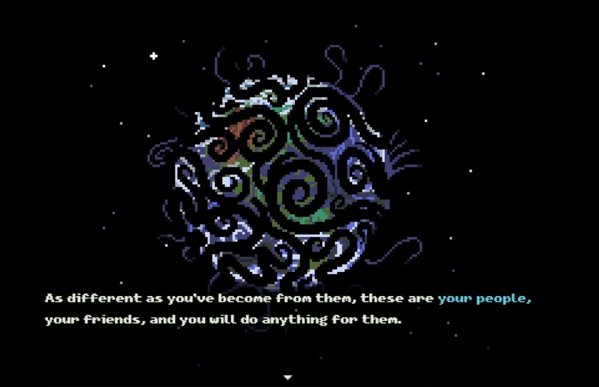
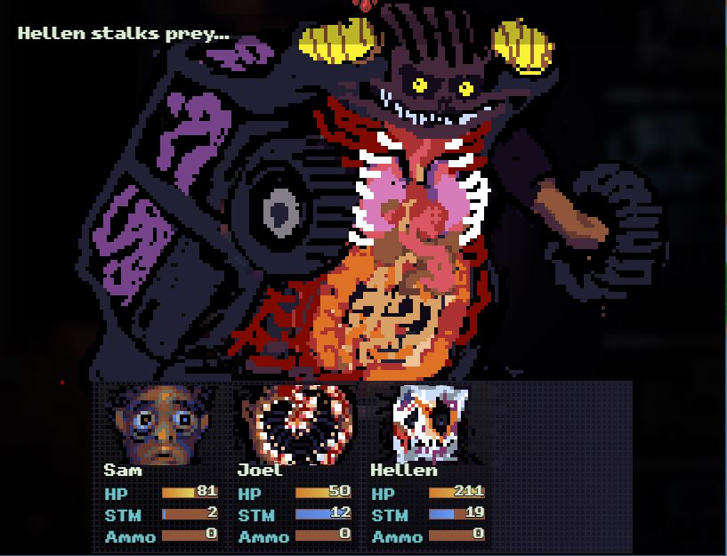

This page is the future site of my DIGIT 100 Game Analysis, focused on the indie RPG-Horror game Look Outside('s demo...)
These pictures were taken for the Kumu page, and are intentionally small and are intended to feature some notable part of each day.
In order, Day 1 features Sam meeting with Sybil, Day 2 features Sam and Joel talking with Benjamin, and Day 3 has Sam and Joel finding the Rat Baby's crib.
Link: https://kumu.io/LilySD/look-outside#look-outside


Pictured above are two action sprites of party members. Sam's thousand-yard stare is a pretty relatable reaction to seeing Joel's face for the first time, even if you come to love both of them. The pixel art can certainly get quite complex especially in battles or other close-ups, but it remains relatively simple while you're exploring the apartment.

In creating environments, Look Outside still manages to sell a dangerous, creepy atmosphere with a few spots of safety, beauty, and hope. A comparison can immediately be made between Sam's apartment, which is unkempt but lit up and containing many mundane but important features like making food and cleaning yourself, and Floor 3 itself, which is full of blood, bodies, and flickering lights. Similarly, Floor 2 has doors boarded up or covered in strange growths, but also features a kind (if strange and stalker-ish) person who helps you finish your quest, and a storefront with a jolly tune that enemies will avoid by default. Essentially, the game has a very good grasp on light and sound which can help sell the exact mood the developer wants you to feel.

The settings (technically being one apartment but functionally being so warped and strange as to give each home its own flavor) range from simple, such as an apartment hosting a party that's now full of warped partygoers, to radical and horrifying, like endlessly looping floors plagued by a nigh invincible Rat King, or apartments made of flesh and teeth that gnaw at anything, friend or foe. You can explore every floor of the building (1-3 and a ground floor), plus some connected areas such as an underground parking garage and the sewers, which brings plenty of variety into the game despite it only taking place in a single apartment complex.


You get to directly control a fair assortment of characters. Sam is your main character who you can never avoid, and he has the most player-defined personality, while all your companions are far more defined as individual people, as will be discussed later. In terms of gameplay, characters can be built in different ways between playthroughs (e.g., Joel can get permanent health upgrades from devouring enemies, but he can also sacrifice health to deal increased damage with his abilities, letting you decide whether he should be a tanky support or a glass cannon damage dealer) which introduces plenty of variety even if you're using the same characters multiple times. Overall, while the game is technically playable with just Sam (you even get an achievement for doing so), it's definitely trying to encourage you to recruit new party members for both gameplay and emotional reasons.

All companion characters will move in with Sam, giving plenty of opportunities to talk, play, and cook with them and learn more about their stories. Some characters even have special quests associated with them, such as heading back to Joel's family as they continue to mutate from the teeth infection, or helping the normally chaotic Leigh deal with her past relationships. Characters also have plenty of interactions with weird, scary, or simply interesting things found around the apartments, giving them continued depth even as you're wandering around.
Beyond just fighting monsters, there's plenty of characters you can go out of your way to help (or occasionally torment). Many characters will have lines if you avoid/flee from them and come back later, either completely losing their minds or coming to their senses and being thankful. Other characters can be found living their own lives, often changed forever by looking outside, but still maintaining an amount of sanity that lets them simply weather the storm until things calm down. Overall, while cruelty is possible in killing innocents just because they "look monstrous", the bulk of interactions you have encourage you acting as a friend to all, getting rewarded with items and allies for your troubles.

The main challenges of Look Outside are the battles, with a bit of light puzzle solving and exploration included as well. Generally, bosses are the main obstacles you need to deal with, usually requiring items, strategizing, and careful management of health and stamina to beat. The main goal of the game is to find four accurate depictions of The Visitor (the force outside that's causing people to morph) and presenting them to four astronomers who wish to communicate with it. From this, you'll continue deeper and deeper into the apartment complex to locate these depictions, and perhaps help some of those who turned along the way. Progress is made through finding these depictions, as well as simply finding new locations that contain supplies, allies, and new routes around the apartments.
On a more macro level, Look Outside limits the amount of items you have through equipment durability and a natural scarcity of consumables. Unlike in more traditional RPGs, this game does not have infinitely-restocking vendors, and using up your on-hand resources can often cause you to end up far from home without the ability to restock and rest. Instead, you're encouraged to spend time resting at home, where you can cook meals to heal, play video games to learn skills, craft items for attacking monsters, and meeting people who might come knocking on your door. Just remember, you only have 15 days until The Visitor leaves for good!

Important items you interact with here include keys, weapons, gear for your head, body, feet, and both arms, and the aforementioned depictions, which can be found as a picture, painting, written depiction, and VHS all containing some description of The Visitor. There are plenty of messages to find around the apartments, and food is important as both a healing source and way to keep your mood up and Rat Baby healthy. You may also encounter planetary discs which open important doors, representing a unique way to open up more of the complex as well as creating puzzles.
Of note are those depictions of The Visitor, as they're your main source of direction and purpose throughout the journey. Not all of them are fully implemented in the demo, but you can still find the skeleton content of what is eventually a full on quest to get all four depictions. All involve meeting a colorful cast of characters, including a stalker photographer, a painter who's been split into ten monstrous copies, a living typewriter, and a security guard turned into the very CCTV machine he was watching. You must be careful about obtaining the correct depictions however, and you must not look at them directly, or else something terrible will happen to poor Sam.
Very well made! The sound design is quiet and creepy when needed, or loud and bombastic when big, scary things are happening. The sound effects in battle are appropriately chunky and 8-bit sounding, though some are definitely default RPG Maker sfx. The music is also extremely well made, having a mix of scary, slow songs while you're wandering around, to exciting and adrenaline pumping songs for bosses and enemy gauntlets. There is a very specific "scary" stinger that's used pretty often though, and while it can be genuinely startling at first, it's overuse definitely diminishes the shock value it provides.
For one, Sam himself is canonically an unemployed loner who plays video games all day, which can certainly be read as a slight dig against people who play too many video games, but one that also furthers the "anyone can help anyone" tone the game loves. Overall the threat is played pretty straight, but there are video games and one party member is a streamer who commentates over your actions, so there's small, but largely unimportant fourth wall breaks. The game certainly has more to say in a macro, human-wide scale than just focusing on it's existence as a playable video game.

That's a big one. The major takeaway from this game is "no matter what happens, if you're kind and work with others and genuinely want what's best, you're still human". Since every monster is just a person who looked outside, there are so many that can be dealt with via kindness and love instead of violence that it's nigh impossible to name them all. The game celebrates the idea that people are diverse and strange but fundamentally pure and happy to support each other no matter how they look. The very best endings don't magically turn people back or anything, and the scale of suffering and death is immense, but society mourns and works to rebuild, accepting the new reality and the cursed as a part of it. It's an obviously fantastical tale, but one with undertones that hit hard and can even bring tears in the right circumstances.


The demo clearly needs work, but the full game is far, far more polished in mechanics, spritework, story, and more. Honestly it'd be fine right as it is currently, but the developer is still working on new things to add around the apartment complex so it's likely that even more monsters will appear as time passes. New music and endings would also always be wonderful, though the latter does seem less likely at this point. Overall, however, Look Outside is a very complete package as-is.